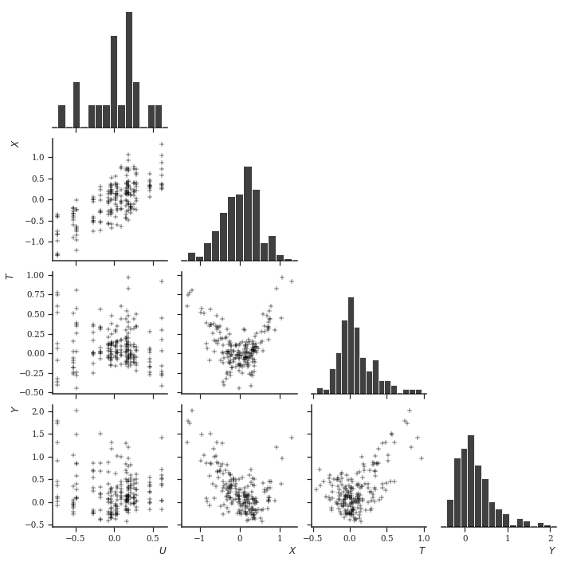
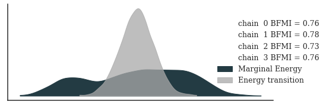
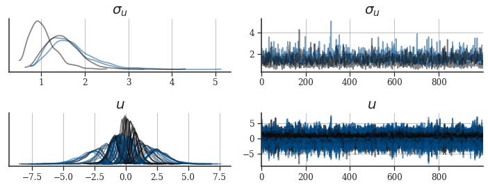
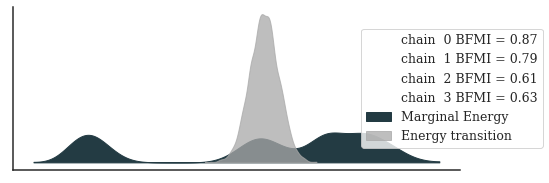
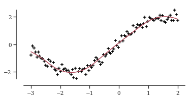
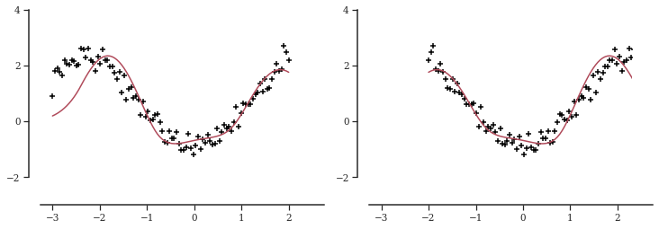
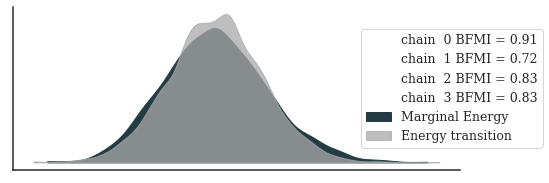
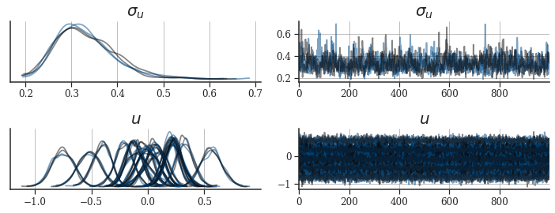
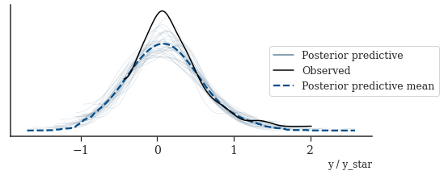

import os
import sys
import warnings
import logging
def timer(func):
from timeit import default_timer
def f(*args, **kwargs):
start = default_timer()
res = func(*args, **kwargs)
stop = default_timer()
print(f"Elapsed time: {stop - start}")
return res
return f
warnings.filterwarnings("ignore")
logging.basicConfig(level=logging.ERROR, stream=sys.stdout)
logging.getLogger("cmdstanpy").setLevel(logging.ERROR)Causal inference using tensor-product smoothing splines with structured latent confounders
While catching up on new literature on causal inference, I found a paper for inference of potential outcomes when observations are confounded in a hierarchical way, i.e., when a latent confounding variable is shared among several observations (Witty et al. 2020). The paper uses Gaussian processes (GPs) to elegantly model the functional relationships between data and latent variables and, following D’Amour (2019), shows that the estimator of the individual treatment effect (ITE) is consistent. Even though consistency of an estimator is a desirable property, for finite data variables of interest are often only weakly identifiable when working with complex nonparametric models and the utility of otherwise elegant models for principled statistical data analysis is limited. Unfortunately, the paper neither provides any code to redo the analysis nor shows sampler diagnostics nor visualizations of posterior distributions.
Hence, in this case study, we will first re-implement the proposed model, examine its MCMC diagnostics, and propose a model that is both significantly faster to fit and produces easier posterior geometries to sample from. Since the model by Witty et al. (2020) uses a Metropolis-within-Gibbs sampler, specifically an elliptical slice sampler (ESS) to sample the latent GP and a random-walk Metropolis (RWM) to sample from the posterior, and Stan does not provide this kind of sampling scheme, we use NumPyro and BlackJax for this model. For the other models, we use Stan’s dynamic Hamiltonian Monte Carlo (dHMC) sampler.
We load some libraries for inference and working with data first.
from functools import partial
import numpy as np
import pandas as pd
import scipy as sp
import jax
import jax.numpy as jnp
import jax.scipy as jsp
import jax.random as random
import blackjax as bj
import numpyro
import numpyro.distributions as dist
from numpyro.infer.reparam import TransformReparam
from numpyro.infer.util import initialize_model
from cmdstanpy import CmdStanModel
import matplotlib.pyplot as plt
import matplotlib.ticker as ticker
import matplotx
import seaborn as sns
import arviz as az
import palettes
sns.set(rc={"figure.figsize": (6, 3)})
sns.set_style("ticks", {"font.family": "serif", "font.serif": "Merriweather"})
palettes.set_theme()
numpyro.set_host_device_count(4)Hierarchical confounding
Witty et al. (2020) assume a structural equations model of the following form
\[\begin{align} u_o & \leftarrow \epsilon_{u_o} \\ x_i & \leftarrow f_X\left(u_{o = \text{Pa}(i)}, \epsilon_{x_i} \right) \\ t_i & \leftarrow f_{T}\left(u_{o = \text{Pa}(i)}, x_i, \epsilon_{t_i} \right) \\ y_i & \leftarrow f_{Y}\left(u_{o = \text{Pa}(i)}, x_i, t_i, \epsilon_{y_i} \right) \\ \end{align}\]
where \(o =1, \dots, N_O\) indexes the number of latent confounders \(U_o\), \(i = 1, \dots, N_I\) indexes covariables \(X_i\), treatments \(T_i\) and outcomes \(Y_i\) all of which we assume to be univariate for simplicity, but w.l.o.g can also be multivariate.
Before we define the model from Witty et al. (2020), we generate some data to define the problem we are dealing with. We first define the sample sizes, number of latent confounders, dimensionality of \(X\) and \(U\) and noise variances:
N_O = 20
N_I = N_O * 10
P_X = P_U = 1
sigma_u = sigma_x = sigma_tr = sigma_y = 0.1i_to_o = jnp.repeat(np.arange(N_O), int(N_I / N_O))We then sample data following a synthetic evaluation from the paper.
rng_key = random.PRNGKey(23)rng_key, sample_key = random.split(rng_key, 2)
U = random.multivariate_normal(
sample_key, mean=np.zeros(P_U), cov=np.eye(P_U) * sigma_u, shape=(N_O,)
)rng_key, sample_key = random.split(rng_key, 2)
X_eps = random.multivariate_normal(
sample_key, mean=np.zeros(P_X), cov=np.eye(P_X) * sigma_x, shape=(N_I,)
)
X = U[i_to_o] + X_epsdef gt(x, u, i_to_o):
xs = np.sum(x * np.sin(x), axis=1)
us = np.sum(u[i_to_o] * np.sin(u[i_to_o]), axis=1)
return xs - us
rng_key, sample_key = random.split(rng_key, 2)
tr_eps = random.normal(sample_key, shape=(N_I,)) * sigma_tr
tr = gt(X, U, i_to_o) + tr_epsdef gy(t, x, u, i_to_o):
ts = t * np.sin(2 * t)
xs = np.sum(np.sin(x), axis=1)
us = np.sum(np.sin(u[i_to_o]), axis=1)
return 2 * ts - xs + us
rng_key, sample_key = random.split(rng_key, 2)
y_eps = random.normal(sample_key, shape=(N_I,)) * sigma_y
y = gy(tr, X, U, i_to_o) + y_epsLet’s visualize this. Note that the functional relationship between \(U\) and any other variable \(X, T, Y\) is - similar to a factor model - basically discrete, since \(N_O < N_I\).
pld = pd.DataFrame({"$U$": U[i_to_o, 0], "$X$": X[:, 0], "$T$": tr, "$Y$": y})
_ = sns.pairplot(
pld,
palette="black",
plot_kws=dict(marker="+", color="black"),
diag_kws=dict(color="black"),
corner=True,
)
plt.show()
A GP model
Witty et al. (2020) propose a semi-parametric model that models every structural equation using a GP (if I translate this correctly from the paper)
\[\begin{align} \rho & \sim \text{InvGamma}(5, 5) \\ \sigma & \sim \text{HalfNormal}(1) \\ u & \sim \text{MvNormal}(0, \sigma_U^2 I) \\ x & \sim \text{GP}\left(0, K_X\left(u_{o = \text{Pa}(i)}, u_{o = \text{Pa}(i)}\right) + \sigma_X^2 I \right) \\ t & \sim \text{GP}\left(0, K_T\left(\left[u_{o = \text{Pa}(i)}, x_i \right], \left[u_{o = \text{Pa}(i)}, x_i \right]\right) + \sigma_T^2 I \right) \\ y & \sim \text{GP}\left(0, K_Y\left(\left[u_{o = \text{Pa}(i)}, x_i, t_i \right], \left[u_{o = \text{Pa}(i)}, x_i, t_i \right]\right) + \sigma_Y^2 I \right) \\ \end{align}\]
where the notation \([a, b]\) concatenates the row-vectors \(a\) and \(b\) along the same axis and every covariance function \(K_k\) is an exponentiated-quadratic covariance function with automatic relevance determination, i.e., for every dimension of a feature vector a separate length-scale is introduced. For instance, \(K_X\left(u_{o = \text{Pa}(i)}, u_{o = \text{Pa}(i)}\right)\) for univariate \(u\) and \(i\) uses three hyperparamters.
On first view, this model seems difficult to fit with common probabilistic languages and Hamiltonian Monte Carlo. The regression of \(X\) on \(U\) is a Gaussian process latent variable model which is in itself is not trivial to work with, even though to help identify the kernel parameters of \(K_X\) statistical strength can be borrowed from the regressions of \(T\) and \(Y\) onto \(U\). In addition, the posterior geometry looks to be challenging to explore due to the high number of positively-constrained parameters and the somewhat awkward covariance structure of \(K_X\left(u_{o = \text{Pa}(i)}, u_{o = \text{Pa}(i)}\right)\). Lastly, for low sample sizes both \(u\) and the kernel hyperparameters might be only weakly identified (if at all) which for interpretation of the results is undesirable.
Reproducing the original approach
Witty et al. (2020) use a Metropolis-within-Gibbs approach to sample from the posterior that consists of two steps:
- an elliptical slice sampler for the latent variable \(U\),
- and a conventional random-walk Metropolis for the covariance function hyperparameters and the noise variances \(\theta = \left( \rho, \sigma, \sigma_X, \sigma_T, \sigma_Y \right)\).
To derive the conditional updates of both variables, let’s start with the joint posterior first. The posterior of both variables is proportional to the joint distribution of all variables:
\[\begin{align*} P(U, \theta \mid Y, T, X) \propto P(Y \mid T, X, U, \theta) P(T \mid X, U, \theta) P(X \mid U, \theta) P(U \mid \theta) P(\theta) \end{align*}\]
The conditional posterior of \(U\) is then:
\[\begin{align*} P(U \mid Y, T, X, \theta) & = \frac{P(Y \mid T, X, U, \theta) P(T \mid X, U, \theta) P(X \mid U, \theta) P(U \mid \theta) P(\theta)}{\int_U P(Y \mid T, X, U, \theta) P(T \mid X, U, \theta) P(X \mid U, \theta) P(U \mid \theta) P(\theta) dU} \\ & = \frac{P(Y \mid T, X, U, \theta) P(T \mid X, U, \theta) P(X \mid U, \theta) P(U \mid \theta)}{\int_U P(Y \mid T, X, U, \theta) P(T \mid X, U, \theta) P(X \mid U, \theta) P(U \mid \theta) dU} \\ & \propto P(Y \mid T, X, U, \theta) P(T \mid X, U, \theta) P(X \mid U, \theta) P(U \mid \theta) \end{align*}\]
Hence we can sample \(U\) proportional to the full joint but leave out the prior probablities of \(\theta\). The conditional posterior of \(\theta\) is:
\[\begin{align*} P(\theta \mid Y, T, X, U) \propto P(Y \mid T, X, U, \theta) P(T \mid X, U, \theta) P(X \mid U, \theta) P(U \mid \theta) P(\theta) \end{align*}\]
Since \(\theta\) does not cancel out, its conditional posterior is proportional to the full joint and we need to evaluate the entire thing here. We can specify the two conditional posteriors, or rather the joint distributions they are proportional to, using NumPyro. This means that we
Let’s try to fit this model. We first define some utility functions, such as the squared exponential covariance function, likelihood function, etc.
def means_and_squared_exponential_chol(
x1, x2, rho=1.0, sigma=1.0, noise_sigma=1.0, jitter=1e-6
):
x1e = jnp.expand_dims(x1, 0) / rho
x2e = jnp.expand_dims(x2, 1) / rho
d = jnp.sum((x1e - x2e) ** 2, axis=-1)
K = sigma * jnp.exp(-0.5 * d)
K += (noise_sigma**2 + jitter) * jnp.eye(d.shape[-1])
K = jnp.linalg.cholesky(K)
return jnp.zeros(x1.shape[0]), Kdef covariance_parameters(variable_name, alpha, beta, sample_shape=()):
cov_rho = numpyro.sample(
f"cov_{variable_name}_rho",
dist.InverseGamma(alpha, beta),
sample_shape=sample_shape,
)
cov_scale = numpyro.sample(f"cov_{variable_name}_scale", dist.HalfNormal())
noise_scale = numpyro.sample(f"{variable_name}_scale", dist.HalfNormal())
return cov_rho, cov_scale, noise_scaledef likelihood(y, variable_name, means, scale_tril):
numpyro.sample(
variable_name, dist.MultivariateNormal(loc=means, scale_tril=scale_tril), obs=y
)The model for conditional posterior \(P(\theta \mid Y, T, X, U)\) can be implemented like this:
def gp_model_given_u(u, N_O, N_I, i_to_o, x, tr, y, alpha, beta):
u_scale = numpyro.sample("u_scale", dist.InverseGamma(alpha, beta))
cov_x_rho, cov_x_scale, x_scale = covariance_parameters("x", alpha, beta)
cov_t_rho, cov_t_scale, t_scale = covariance_parameters("t", alpha, beta, (2,))
cov_y_rho, cov_y_scale, y_scale = covariance_parameters("y", alpha, beta, (3,))
numpyro.sample("u", dist.Normal(0.0, u_scale), obs=u)
u = u[i_to_o]
means, scale_tril_x = means_and_squared_exponential_chol(
u, u, cov_x_rho, cov_x_scale, x_scale
)
likelihood(x, "x", means, scale_tril_x)
ux = jnp.concatenate([u, x], axis=-1)
means, scale_tril_tr = means_and_squared_exponential_chol(
ux, ux, cov_t_rho, cov_t_scale, t_scale
)
likelihood(tr, "tr", means, scale_tril_tr)
uxt = jnp.concatenate([ux, tr], axis=-1)
means, scale_tril_y = means_and_squared_exponential_chol(
uxt, uxt, cov_y_rho, cov_y_scale, y_scale
)
likelihood(y, "y", means, scale_tril_y)
gp_model_given_u_fn = partial(
gp_model_given_u,
N_O=N_O,
N_I=N_I,
i_to_o=i_to_o,
x=X.reshape(-1, 1),
tr=tr.reshape(-1, 1),
y=y.reshape(-1, 1),
alpha=5.0,
beta=5.0,
)To sample from \(P(\theta \mid Y, T, X, U)\), we use the same random-walk Metropolis sampler as in Witty et al. (2020). We can create the respective kernel and create an initial state like this:
def init_theta_kernel_and_logprob(rng_key, num_chains=4):
sample_key, rng_key = random.split(rng_key, 2)
U_sample = dist.Normal(jnp.zeros_like(U)).sample(sample_key)
def _init(init_key):
init_params, potential_fn_gen, *_ = initialize_model(
init_key,
gp_model_given_u_fn,
model_args=(U_sample,),
dynamic_args=True,
)
return init_params, potential_fn_gen
init_key, rng_key = random.split(rng_key, 2)
init_params, potential_fn_gen = _init(init_key)
p_dim = jnp.sum(
jnp.array(jax.tree_flatten(jax.tree_map(jnp.size, init_params.z))[0])
)
def _create_kernel(z):
log_prob = lambda position: -potential_fn_gen(**z)(position)
kernel = partial(
bj.mcmc.rmh.kernel(), logprob_fn=log_prob, sigma=0.1 * jnp.eye(p_dim)
)
return kernel
log_prob = lambda position: -potential_fn_gen(**{"u": U_sample})(position)
initial_state = bj.mcmc.rmh.init(init_params.z, logprob_fn=log_prob)
return _create_kernel, initial_state
init_key, rng_key = random.split(rng_key)
theta_create_kernel_fn, theta_states = init_theta_kernel_and_logprob(init_key)To the model that is proportional to \(P(U \mid Y, T, X, \theta)\) can be implemented like this:
def gp_model_given_theta(
u_scale,
cov_x_rho,
cov_x_scale,
x_scale,
cov_t_rho,
cov_t_scale,
t_scale,
cov_y_rho,
cov_y_scale,
y_scale,
N_O,
N_I,
i_to_o,
x,
tr,
y,
):
u = numpyro.sample("u", dist.Normal(0.0, u_scale), sample_shape=(N_O, 1))
u = u[i_to_o]
means, scale_tril_x = means_and_squared_exponential_chol(
u, u, cov_x_rho, cov_x_scale, x_scale
)
likelihood(x, "x", means, scale_tril_x)
ux = jnp.concatenate([u, x], axis=-1)
means, scale_tril_tr = means_and_squared_exponential_chol(
ux, ux, cov_t_rho, cov_t_scale, t_scale
)
likelihood(tr, "tr", means, scale_tril_tr)
uxt = jnp.concatenate([ux, tr], axis=-1)
means, scale_tril_y = means_and_squared_exponential_chol(
uxt, uxt, cov_y_rho, cov_y_scale, y_scale
)
likelihood(y, "y", means, scale_tril_y)
gp_model_given_theta_fn = partial(
gp_model_given_theta,
N_O=N_O,
N_I=N_I,
i_to_o=i_to_o,
x=X.reshape(-1, 1),
tr=tr.reshape(-1, 1),
y=y.reshape(-1, 1),
)We can sample the latent variable from the model above using an ellipitical slice sampler. The code to initialize an ESS is a bit lengthy:
def init_u_kernel_and_logprob(rng_key):
def sample_covariance_parameters(rng_key, alpha, beta, sample_shape=()):
rho_key, scale_key, sigma_key = random.split(rng_key, 3)
cov_rho = dist.InverseGamma(alpha, beta).sample(
rho_key, sample_shape=sample_shape
)
cov_scale = dist.HalfNormal().sample(scale_key)
scale = dist.HalfNormal().sample(sigma_key)
return cov_rho, cov_scale, scale
def _init(init_key):
init_params, potential_fn_gen, *_ = initialize_model(
init_key,
gp_model_given_theta_fn,
model_args=(
u_scale,
cov_x_rho,
cov_x_scale,
x_scale,
cov_t_rho,
cov_t_scale,
t_scale,
cov_y_rho,
cov_y_scale,
y_scale,
),
dynamic_args=True,
)
return init_params, potential_fn_gen
def _create_kernel(z):
log_prob = lambda position: -potential_fn_gen(**z)(position)
kernel = partial(
bj.mcmc.elliptical_slice.kernel(
mean=jnp.zeros(N_O), cov_matrix=jnp.eye(N_O)
),
loglikelihood_fn=log_prob,
)
return kernel
sample_key, rng_key = random.split(rng_key, 2)
u_scale = dist.InverseGamma(5.0, 5.0).sample(sample_key)
sample_key, rng_key = random.split(rng_key, 2)
cov_x_rho, cov_x_scale, x_scale = sample_covariance_parameters(sample_key, 5.0, 5.0)
sample_key, rng_key = random.split(rng_key, 2)
cov_t_rho, cov_t_scale, t_scale = sample_covariance_parameters(
sample_key, 5.0, 5.0, (2,)
)
sample_key, rng_key = random.split(rng_key, 2)
cov_y_rho, cov_y_scale, y_scale = sample_covariance_parameters(
sample_key, 5.0, 5.0, (3,)
)
init_key, rng_key = random.split(rng_key, 2)
init_params, potential_fn_gen = _init(init_key)
z = {
"u_scale": u_scale,
"cov_x_rho": cov_x_rho,
"cov_x_scale": cov_x_scale,
"x_scale": x_scale,
"cov_t_rho": cov_t_rho,
"cov_t_scale": cov_t_scale,
"t_scale": t_scale,
"cov_y_rho": cov_y_rho,
"cov_y_scale": cov_y_scale,
"y_scale": y_scale,
}
log_prob = lambda position: -potential_fn_gen(**z)(position)
initial_state = bj.mcmc.elliptical_slice.init(
init_params.z, loglikelihood_fn=log_prob
)
return _create_kernel, initial_state
init_key, rng_key = random.split(rng_key)
u_create_kernel_fn, u_states = init_u_kernel_and_logprob(init_key)Let’s check if this worked out. We draw some samples from the \(\theta\)- and \(u\)-kernels while conditioning on the samples drawn from the other kernel:
theta_kernel = theta_create_kernel_fn({"u": U})
theta_states, _ = theta_kernel(init_key, theta_states)
u_kernel = u_create_kernel_fn(theta_states.position)
u_states, _ = u_kernel(init_key, u_states)
u_statesEllipSliceState(position={'u': DeviceArray([[ 0.14244081],
[-0.4872629 ],
[ 0.57586974],
[ 1.3627449 ],
[ 0.22614735],
[-0.22915024],
[ 0.737732 ],
[-0.63063395],
[-0.03319287],
[ 0.36659515],
[-0.5565795 ],
[ 0.97630453],
[-1.642361 ],
[ 0.50184184],
[ 0.02560506],
[ 0.30197924],
[-0.58700615],
[ 0.30288985],
[-0.1568119 ],
[ 0.88928884]], dtype=float32)}, loglikelihood=DeviceArray(nan, dtype=float32))theta_kernel = theta_create_kernel_fn(u_states.position)
theta_states, _ = theta_kernel(init_key, theta_states)
theta_statesRMHState(position={'cov_t_rho': DeviceArray([0.8406737, 1.0236844], dtype=float32), 'cov_t_scale': DeviceArray(0.8507148, dtype=float32), 'cov_x_rho': DeviceArray(-1.0597515, dtype=float32), 'cov_x_scale': DeviceArray(1.4353114, dtype=float32), 'cov_y_rho': DeviceArray([-0.90294284, -0.94434786, 1.2376969 ], dtype=float32), 'cov_y_scale': DeviceArray(0.30932292, dtype=float32), 't_scale': DeviceArray(1.1418653, dtype=float32), 'u_scale': DeviceArray(-1.3001951, dtype=float32), 'x_scale': DeviceArray(1.8077312, dtype=float32), 'y_scale': DeviceArray(-0.6635825, dtype=float32)}, log_probability=DeviceArray(-208559.3, dtype=float32))Great, this worked fine. Now, let’s draw from the posterior of the two variables. To do so, we implement a Metropolis-within-Gibbs kernel like this:
def inference_loop(rng_key, initial_theta_states, initial_u_states, num_samples):
@jax.jit
def step(states, rng_key):
theta_states, u_states = states
theta_key, u_key = jax.random.split(rng_key, 2)
theta_kernel = theta_create_kernel_fn(u_states.position)
theta_states, _ = theta_kernel(theta_key, theta_states)
u_kernel = u_create_kernel_fn(theta_states.position)
u_states, _ = u_kernel(u_key, u_states)
return (theta_states, u_states), (theta_states, u_states)
keys = jax.random.split(rng_key, num_samples)
_, (theta_states, u_states) = jax.lax.scan(
step, (initial_theta_states, initial_u_states), keys
)
return theta_states, u_statesWe use four chains and sample each chain 5000 times and then discard the first 1000 samples. We can probably do this more efficiently using Jax’s vmap, but since Blackjax is so fast anyway, it doesn’t make a difference anyway.
chains = [None] * 4
for i in np.arange(4):
init_key, rng_key = random.split(rng_key)
posterior_theta_states, posterior_u_states = inference_loop(
init_key, theta_states, u_states, 5000
)
_ = posterior_theta_states.position["u_scale"].block_until_ready()
chains[i] = {**posterior_theta_states.position, **posterior_u_states.position}Put all the chains together:
def merge(*xs):
if xs[0].ndim == 1:
xs = [x[:, None] for x in xs]
xs = [x[None, ...] for x in xs]
return jnp.concatenate(xs, axis=0)
samples = jax.tree_map(merge, *chains)Let’s have a look at model diagnostics. We check effective sample size and potential scale reduction statistic.
for k, v in samples.items():
esses = jnp.atleast_1d(bj.diagnostics.effective_sample_size(v[:, 1000:, :]))
rhats = jnp.atleast_1d(bj.diagnostics.potential_scale_reduction(v[:, 1000:, :]))
for i, (ess, rhat) in enumerate(zip(esses, rhats)):
print(f"{k}_{i} ESS := {ess}, R-hat := {rhat}")cov_t_rho_0 ESS := 2.202563762664795, R-hat := 3.362495183944702
cov_t_rho_1 ESS := 2.0379316806793213, R-hat := 7.525145530700684
cov_t_scale_0 ESS := 2.0275516510009766, R-hat := 8.80030345916748
cov_x_rho_0 ESS := 2.032320976257324, R-hat := 8.29069995880127
cov_x_scale_0 ESS := 2.016557216644287, R-hat := 11.365096092224121
cov_y_rho_0 ESS := 2.0739545822143555, R-hat := 5.480118751525879
cov_y_rho_1 ESS := 2.994222640991211, R-hat := 1.7775665521621704
cov_y_rho_2 ESS := 2.1926076412200928, R-hat := 3.4672467708587646
cov_y_scale_0 ESS := 2.1060869693756104, R-hat := 4.612753868103027
t_scale_0 ESS := 2.028766632080078, R-hat := 8.712288856506348
u_0 ESS := 15847.146484375, R-hat := 1.0001482963562012
u_1 ESS := 15804.7939453125, R-hat := 1.0000032186508179
u_2 ESS := 15076.171875, R-hat := 0.9998949766159058
u_3 ESS := 15514.26171875, R-hat := 0.9999516010284424
u_4 ESS := 15609.65625, R-hat := 0.9999165534973145
u_5 ESS := 16274.8515625, R-hat := 0.9998970031738281
u_6 ESS := 15657.515625, R-hat := 0.9999484419822693
u_7 ESS := 15322.263671875, R-hat := 0.9999907612800598
u_8 ESS := 16270.4130859375, R-hat := 0.9999168515205383
u_9 ESS := 15645.1123046875, R-hat := 0.9999098777770996
u_10 ESS := 15554.1435546875, R-hat := 1.000144124031067
u_11 ESS := 15901.517578125, R-hat := 0.9999632835388184
u_12 ESS := 15647.9208984375, R-hat := 0.9999827146530151
u_13 ESS := 15854.900390625, R-hat := 0.9999595880508423
u_14 ESS := 15819.40625, R-hat := 1.0002115964889526
u_15 ESS := 15466.146484375, R-hat := 0.9999833703041077
u_16 ESS := 15765.470703125, R-hat := 1.0002683401107788
u_17 ESS := 14511.49609375, R-hat := 1.0001013278961182
u_18 ESS := 15955.2646484375, R-hat := 1.000172734260559
u_19 ESS := 15510.50390625, R-hat := 0.9998869895935059
u_scale_0 ESS := 2.0861570835113525, R-hat := 5.082359313964844
x_scale_0 ESS := 2.2595245838165283, R-hat := 2.982508420944214
y_scale_0 ESS := 2.1550612449645996, R-hat := 3.846733331680298Convergence diagnostics look as expected: while the posterior samples of \(u\) look somewhat fine, the kernel parameters have unacceptably low effective sample sizes, which also makes the samples of \(u\) unreliable (because they depend on each other).
An approach using Stan and a tuned NUTS
The approach from the paper that proposed a Metropolis-within-Gibbs sampling scheme using a random-walk Metropolis and elliptical slice sampler did not work out for us on this data set. Let’s try to sample all variables jointly using NUTS. For this, we can either use Blackjax again and implement the joint density using NumPyro, or we switch to Stan, which generally makes life for us a bit easier to diagnose inferences.
Hence, let’s try the same model from above, but sample the latent variables jointly, i.e., sample from \(P(U, \theta \mid Y, T, X)\).
For Stan, we first wrap the data into a dictionary:
data = {
"N_I": N_I,
"N_O": N_O,
"i_to_o": np.asarray(i_to_o + 1),
"X": np.asarray(jnp.squeeze(X)),
"tr": np.asarray(tr),
"y": np.asarray(y),
"alpha": 5.0,
"beta": 5.0,
}In addition, we define a sampling method such that we can time inference of posterior distributions of a model. We again sample a total of \(5000\) times on four separate chains of which we discard the first \(1000\) samples which is usually more than enough for NUTS.
@timer
def sample(model, data):
return model.sample(data=data, show_progress=False, seed=1)We also define a function to compile a model:
def compile(model_file):
model = CmdStanModel(stan_file=model_file)
return modelmodels_folder = "_models/causal_inference_using_tensor_product_smoothing_splines"The model implementation can be found at the end of this document.
gp_model_file = os.path.join(models_folder, "gp_model.stan")
model = compile(gp_model_file)DEBUG:cmdstanpy:found newer exe file, not recompilingfit = sample(model, data)The fit was tremendously slow which is usually a sign of a very unfavourable posterior geometry. Let’s have a look at posterior diagnostics.
print(fit.diagnose())Processing csv files: /var/folders/w8/7mc8k9m916qgh982xqxfgsr00000gn/T/tmpojd0ieol/gp_modell0jpc8h6/gp_model-20220918194927_1.csv, /var/folders/w8/7mc8k9m916qgh982xqxfgsr00000gn/T/tmpojd0ieol/gp_modell0jpc8h6/gp_model-20220918194927_2.csv, /var/folders/w8/7mc8k9m916qgh982xqxfgsr00000gn/T/tmpojd0ieol/gp_modell0jpc8h6/gp_model-20220918194927_3.csv, /var/folders/w8/7mc8k9m916qgh982xqxfgsr00000gn/T/tmpojd0ieol/gp_modell0jpc8h6/gp_model-20220918194927_4.csv
Checking sampler transitions treedepth.
Treedepth satisfactory for all transitions.
Checking sampler transitions for divergences.
No divergent transitions found.
Checking E-BFMI - sampler transitions HMC potential energy.
The E-BFMI, 0.13, is below the nominal threshold of 0.30 which suggests that HMC may have trouble exploring the target distribution.
If possible, try to reparameterize the model.
The following parameters had fewer than 0.001 effective draws per transition:
U_tilde[1], U_tilde[2], U_tilde[3], U_tilde[4], U_tilde[5], U_tilde[6], U_tilde[7], U_tilde[8], U_tilde[9], U_tilde[10], U_tilde[11], U_tilde[12], U_tilde[13], U_tilde[14], U_tilde[15], U_tilde[16], U_tilde[17], U_tilde[18], U_tilde[19], U_tilde[20], cov_t_rhos[1], U[1], U[2], U[3], U[4], U[5], U[6], U[7], U[8], U[9], U[10], U[11], U[12], U[13], U[14], U[15], U[16], U[17], U[18], U[19], U[20]
Such low values indicate that the effective sample size estimators may be biased high and actual performance may be substantially lower than quoted.
The following parameters had split R-hat greater than 1.05:
u_scale, U_tilde[1], U_tilde[2], U_tilde[3], U_tilde[4], U_tilde[5], U_tilde[6], U_tilde[7], U_tilde[8], U_tilde[9], U_tilde[10], U_tilde[11], U_tilde[12], U_tilde[13], U_tilde[14], U_tilde[15], U_tilde[16], U_tilde[17], U_tilde[18], U_tilde[19], U_tilde[20], cov_x_rho, cov_x_scale, cov_t_rhos[1], cov_t_rhos[2], cov_y_rhos[1], U[1], U[2], U[3], U[4], U[5], U[6], U[7], U[8], U[9], U[10], U[11], U[12], U[13], U[14], U[15], U[16], U[17], U[18], U[19], U[20]
Such high values indicate incomplete mixing and biased estimation.
You should consider regularizating your model with additional prior information or a more effective parameterization.
Processing complete.
Let’s also have a look at the energy plot and a trace plot of \(U\) and \(\sigma_U\).
posterior_az = az.from_cmdstanpy(fit)
_, ax = plt.subplots(figsize=(8, 3))
_ = az.plot_energy(posterior_az, ax=ax, fill_color=["#233B43", "darkgrey"])
_ = ax.legend(title="", bbox_to_anchor=(1.2, 0.5), frameon=False)
plt.show()
_, axes = plt.subplots(ncols=2, nrows=2, figsize=(10, 4))
axes = az.plot_trace(
posterior_az,
axes=axes,
var_names=["u_scale", "U"],
chain_prop={
"color": palettes.discrete_qualitative_colors(2),
"linewidth": [1.75],
"alpha": [0.5],
},
)
for ax in axes.flatten():
ax.grid(axis="both")
ax.tick_params(labelsize=12)
axes[0, 0].set_title("$\sigma_u$", size=20)
axes[0, 1].set_title("$\sigma_u$", size=20)
axes[1, 0].set_title("$u$", size=20)
axes[1, 1].set_title("$u$", size=20)
plt.tight_layout()
plt.show()
The MCMC diagnostics are worrisome. Not only did the chains not mix, the effective sample size of some parameters is approximately one. We could just sample longer chains, increase the tree-depth or decrease adapt-delta, but this model seems too pathological to fit successfully (at least for this data set).
I assume the low effective sample size when using HMC was one of the reasons why the authors used an elliptical slice sampler for the confounders. They note however: “[the model] tends to underestimate the uncertainty in [the counterfactual] estimates. In other words, the posterior density on the ground-truth counterfactual is sometimes low, despite the fact that the mean estimate is close to the ground-truth relative to the baselines. We suspect that this is partially attributable to inaccuracies resulting from our approximate inference procedure”. Hence, it might very well be that their sampling scheme produces the same pathological result (which warrants the question why they didn’t include diagnostics given that the model seems either ill-defined or at least hard to work with in practice, and given that there are apparently inaccuracies resulting from our approximate inference procedure).
A second GP model
The inference of \(U\) seems to be problematic. Let’s try a simpler model, where we replace the GP regression of \(X\) on \(U\) with a single linear predictor:
\[\begin{align} \rho & \sim \text{InvGamma}(5, 5) \\ \sigma & \sim \text{HalfNormal}(1) \\ u & \sim \text{MvNormal}(0, \sigma_U^2 I) \\ \beta & \sim \text{Normal}(0, 1) \\ x_i & \sim \text{Normal}\left(u_{o = \text{Pa}(i)}\beta, \sigma_X^2 \right) \\ t & \sim \text{GP}\left(0, K_T\left(\left[u_{o = \text{Pa}(i)}, x_i \right], \left[u_{o = \text{Pa}(i)}, x_i \right]\right) + \sigma_T^2 I \right) \\ y & \sim \text{GP}\left(0, K_Y\left(\left[u_{o = \text{Pa}(i)}, x_i, t_i \right], \left[u_{o = \text{Pa}(i)}, x_i, t_i \right]\right) + \sigma_Y^2 I \right) \\ \end{align}\]
Let’s try fitting this model.
gplinear_model_file = os.path.join(models_folder, "gp+linear_model.stan")
model = compile(gplinear_model_file)fit = sample(model, data)Elapsed time: 3439.8415772089993The fit was a bit faster. What are the diagnostics saying?
print(fit.diagnose())Processing csv files: /var/folders/w8/7mc8k9m916qgh982xqxfgsr00000gn/T/tmpojd0ieol/gp+linear_modelo7ragbjn/gp+linear_model-20220918215445_1.csv, /var/folders/w8/7mc8k9m916qgh982xqxfgsr00000gn/T/tmpojd0ieol/gp+linear_modelo7ragbjn/gp+linear_model-20220918215445_2.csv, /var/folders/w8/7mc8k9m916qgh982xqxfgsr00000gn/T/tmpojd0ieol/gp+linear_modelo7ragbjn/gp+linear_model-20220918215445_3.csv, /var/folders/w8/7mc8k9m916qgh982xqxfgsr00000gn/T/tmpojd0ieol/gp+linear_modelo7ragbjn/gp+linear_model-20220918215445_4.csv
Checking sampler transitions treedepth.
Treedepth satisfactory for all transitions.
Checking sampler transitions for divergences.
No divergent transitions found.
Checking E-BFMI - sampler transitions HMC potential energy.
The E-BFMI, 0.02, is below the nominal threshold of 0.30 which suggests that HMC may have trouble exploring the target distribution.
If possible, try to reparameterize the model.
The following parameters had fewer than 0.001 effective draws per transition:
u_scale, U_tilde[1], U_tilde[2], U_tilde[3], U_tilde[4], U_tilde[5], U_tilde[6], U_tilde[7], U_tilde[8], U_tilde[9], U_tilde[10], U_tilde[11], U_tilde[12], U_tilde[13], U_tilde[14], U_tilde[15], U_tilde[16], U_tilde[17], U_tilde[18], U_tilde[19], U_tilde[20], x_beta, x_scale, cov_t_rhos[1], cov_y_rhos[1], U[1], U[2], U[3], U[4], U[5], U[6], U[7], U[8], U[9], U[10], U[11], U[12], U[13], U[14], U[15], U[16], U[17], U[18], U[19], U[20]
Such low values indicate that the effective sample size estimators may be biased high and actual performance may be substantially lower than quoted.
The following parameters had split R-hat greater than 1.05:
u_scale, U_tilde[1], U_tilde[2], U_tilde[3], U_tilde[4], U_tilde[5], U_tilde[6], U_tilde[7], U_tilde[8], U_tilde[9], U_tilde[10], U_tilde[11], U_tilde[12], U_tilde[13], U_tilde[14], U_tilde[15], U_tilde[16], U_tilde[17], U_tilde[18], U_tilde[19], U_tilde[20], x_beta, x_scale, cov_t_rhos[1], cov_t_rhos[2], cov_t_scale, t_scale, cov_y_rhos[1], U[1], U[2], U[3], U[4], U[5], U[6], U[7], U[8], U[9], U[10], U[11], U[12], U[13], U[14], U[15], U[16], U[17], U[18], U[19], U[20]
Such high values indicate incomplete mixing and biased estimation.
You should consider regularizating your model with additional prior information or a more effective parameterization.
Processing complete.
posterior_az = az.from_cmdstanpy(fit)
_, ax = plt.subplots(figsize=(8, 3))
_ = az.plot_energy(posterior_az, ax=ax, fill_color=["#233B43", "darkgrey"])
_ = ax.legend(title="", bbox_to_anchor=(1.2, 0.5))
plt.show()
The chains still don’t seem to converge. The effective sample sizes are worrisome, too.
A tensor-product spline model
Both models seem to be too hard to sample from to make work in practice and draw statistically reliable conclusions for decision making. As a final approach we simplify the model one more time and replace all functional GP relationships with smoothing splines. Since the regressions \(f: U, X \rightarrow T\) and \(f: U, X, T \rightarrow Y\) use vectorial inputs, we will use a tensor-product smoothing spline (Wood (2006)) based on B-spline bases.
A spline with of order \(m + 1\) with \(K\) parameters can be represented as a linear combination of B-spline bases as
\[\begin{equation} f(x) = \sum_i^K \alpha_i B_{i, m}(x) \end{equation}\]
where \(B_i^m\) are defined recursively via
\[\begin{equation} B_{i, 1}(x) = \begin{cases} 1 & \text{if } k_i \le x < k_{i + 1}\\ 0 & \text{otherwise} \end{cases} \end{equation}\]
and
\[\begin{equation} B_{i, m}(x)_ = \frac{x - k_i}{k_{i + m + 1} - k_i} B_{i, m - 1}(x) + \frac{k_{i + m + 2} - x}{k_{i + m + 2} - k_{i + 1}} B_{i + 1, m - 1}(x) \end{equation}\]
To define a B-spline basis with \(K\) parameters and order \(m + 1\) we will need to define a \(K + m + 2\)-dimensional vector of knots \(k\) (which in practice can be a bit annoying). As Milad Kharratzadeh notes in his spline case study, we should define an extended knot sequence to cover the whole span of the knots, but for this case-study we follow the description in Wood (2017) to avoid confusion.
To build a B-spline basis in Stan we consequently need to implement this recursive definition. Since this definition only handles univariate inputs, we will use a tensor-product basis over multiple variables. Following Wood (2006), the constructions of a tensor-product basis starts by constructing low-rank bases \(B^V\) for every variable \(V\). We then define a tensor-product spline over a set of variables as
\[\begin{equation} f(x, y; \alpha) = \sum_k^K \sum_l^L \alpha_{kl} B^X_{k,m} B^Y_{l,m} \end{equation}\]
We can extend this construction further for a third variable
\[\begin{equation} f(x, y, z; \alpha) = \sum_k^K \sum_l^L \sum_j^J \alpha_{klj} B^X_{k,m} B^Y_{l,m} B^Z_{j,m} \end{equation}\]
This construction is all we need to define a smooth functions over the three variables. For our model, we will use B-spline bases which are not necessarily low-rank. However, by regularize adjacent pairs of coefficients \(\alpha\) to control the wiggliness of the basis function (see Wood (2017) who explains this way better).
Let’s test these two models. First we simulate data and fit a conventional B-spline.
tn = 100
tx = np.linspace(-3, 2, tn)
ty_mean = 2 * np.sin(tx)
ty = ty_mean + random.normal(random.PRNGKey(0), shape=(tn,)) * 0.25
tdata = {
"N": tn,
"X": np.asarray(tx),
"y": np.asarray(ty),
"degree": 2,
"n_knots": 6,
"knots": np.linspace(-4, 4, 6),
}
tps_file = os.path.join(models_folder, "b_spline.stan")
model = compile(tps_file)
fit = model.sample(data=tdata, chains=2)
ty_star = np.mean(fit.draws_pd(vars="y_hat").values, axis=0) _, ax = plt.subplots()
_ = ax.scatter(tx, ty, marker="+", color="black")
_ = ax.plot(tx, ty_star, color=palettes.discrete_qualitative_colors(4)[2])
ax.yaxis.set_major_locator(ticker.MultipleLocator(base=2))
ax.spines["bottom"].set_bounds(-3.25, 2.25)
ax.spines["left"].set_bounds(-2.5, 2.5)
ax.set_xlim([-3.5, 2.3])
ax.set_ylim([-3, 3])
plt.show()
Then we simulate a regression model with two covariables and fit a tensor-product smoother with B-spline bases.
tn = 100
tx1 = np.linspace(-3, 2, tn)
tx2 = np.linspace(3, -2, tn)
ty_mean = tx1 * np.sin(tx1) - np.cos(tx2)
ty = ty_mean + random.normal(random.PRNGKey(0), shape=(tn,)) * 0.25
tdata = {
"N": tn,
"X": np.asarray(np.vstack([tx1, tx2])).T,
"y": np.asarray(ty),
"degree": 2,
"n_knots": 6,
"x1_knots": np.linspace(-4, 4, 6),
"x2_knots": np.linspace(-4, 4, 6),
}
tps_file = os.path.join(models_folder, "tp_spline.stan")
model = compile(tps_file)
fit = model.sample(data=tdata, chains=2)
ty_star = np.mean(fit.draws_pd(vars="y_hat").values, axis=0) _, axes = plt.subplots(figsize=(12, 4), ncols=2)
for i, (ax, tx) in enumerate(zip(axes, [tx1, tx2])):
_ = ax.scatter(tx, ty, marker="+", color="black")
_ = ax.plot(tx, ty_star, color=palettes.discrete_qualitative_colors(4)[2])
ax.yaxis.set_major_locator(ticker.MultipleLocator(base=2))
ax.spines["bottom"].set_bounds(-3.25, 2.75)
ax.spines["left"].set_bounds(-2, 4)
ax.set_xlim([-3.5, 2.3])
ax.set_ylim([-3, 4])
plt.show()
This worked nicely! The fit is not as good as with a Gaussian process but easy to fit.
Replacing the GPs in our causal structural model with smoothing splines yields the following generative model:
\[\begin{align} \sigma & \sim \text{HalfNormal}(1.0) \\ u & \sim \text{MvNormal}(0, \sigma_U^2 I) \\ \beta_X & \sim \text{Normal}(0, 1) \\ x_i & \sim \text{Normal}\left(u_{o = \text{Pa}(i)}\beta_X, \sigma_X^2 \right) \\ \beta_{T0} & \sim \text{Normal}(0, 1) \\ \beta_{Ti} & \sim \text{Normal}(\beta_{T,i-1}, \sigma_{\beta_T}) \\ t_i & \sim \text{Normal}\left(f\left(u_{o = \text{Pa}(i)}, x_i\right)^T \beta_T, \sigma_T^2 I \right) \\ \beta_{Y0} & \sim \text{Normal}(0, 1) \\ \beta_{Yi} & \sim \text{Normal}(\beta_{Y,i-1}, \sigma_{\beta_Y}) \\ y_i & \sim \text{Normal}\left(f\left(u_{o = \text{Pa}(i)}, x_i, t_i\right)^T \beta_Y, \sigma_Y^2 I \right) \\ \end{align}\]
where \(f(\dots; \dots)\) are penalized tensor-product smoothers with B-spline bases as defined above.
Before fitting this, we need to define the order of the spline, or equivalently its degree, and a sequence of knots for every variable. For \(X\) we can just use quantiles. For \(U\) which is latent we use quantiles of a normal with standard deviation \(1\) which should cover the domain of the highest density region of the posterior. For \(T\) which is the treatment, since we possibly want to make counterfactual predictions, we should define knots on that region. Hence we compute the quantiles on all values of \(T\) and th \(T + 1\) (this is kinda arbitrary for this example). This is arguably a bit awkward, but we need to make sure to cover the entire domain to have a well defined spline basis.
We choose a degree of \(d=2\), since the pair plots of the data above suggest approximately quadratic relationships (at least since we pretend to not know the data generating process).
data["degree"] = 2
data["n_knots"] = 6
quantiles = np.linspace(0.01, 0.99, data["n_knots"])
u_knots = sp.stats.norm.ppf(loc=0, scale=1, q=quantiles)
x_knots = np.quantile(X, q=quantiles)
tr_knots = np.quantile(np.concatenate([tr, tr + 1]), q=quantiles)
data["u_knots"] = np.asarray(u_knots)
data["x_knots"] = np.asarray(x_knots)
data["tr_knots"] = np.asarray(tr_knots)We can now fit the model
tps_model_file = os.path.join(models_folder, "tps_model.stan")
model = compile(tps_model_file)fit = sample(model, data)Elapsed time: 73.14618029200028The fit is significantly faster. Let’s have a look at some diagnostics.
print(fit.diagnose())Processing csv files: /var/folders/w8/7mc8k9m916qgh982xqxfgsr00000gn/T/tmpojd0ieol/tps_model2lpygd29/tps_model-20220918230800_1.csv, /var/folders/w8/7mc8k9m916qgh982xqxfgsr00000gn/T/tmpojd0ieol/tps_model2lpygd29/tps_model-20220918230800_2.csv, /var/folders/w8/7mc8k9m916qgh982xqxfgsr00000gn/T/tmpojd0ieol/tps_model2lpygd29/tps_model-20220918230800_3.csv, /var/folders/w8/7mc8k9m916qgh982xqxfgsr00000gn/T/tmpojd0ieol/tps_model2lpygd29/tps_model-20220918230800_4.csv
Checking sampler transitions treedepth.
Treedepth satisfactory for all transitions.
Checking sampler transitions for divergences.
No divergent transitions found.
Checking E-BFMI - sampler transitions HMC potential energy.
E-BFMI satisfactory.
Effective sample size satisfactory.
Split R-hat values satisfactory all parameters.
Processing complete, no problems detected.
Diagnostics look excellent.
fit.summary()| Mean | MCSE | StdDev | 5% | 50% | 95% | N_Eff | N_Eff/s | R_hat | |
|---|---|---|---|---|---|---|---|---|---|
| lp__ | 353.810000 | 0.237701 | 6.619450 | 342.235000 | 354.099000 | 363.931000 | 775.501 | 6.59855 | 1.001000 |
| u_scale | 0.329815 | 0.002332 | 0.064081 | 0.242111 | 0.320855 | 0.443031 | 755.340 | 6.42700 | 1.002270 |
| U_tilde[1] | -0.121671 | 0.003324 | 0.252171 | -0.544522 | -0.117629 | 0.273565 | 5755.600 | 48.97300 | 0.999657 |
| U_tilde[2] | -0.350781 | 0.003841 | 0.255662 | -0.763755 | -0.345289 | 0.066565 | 4431.240 | 37.70430 | 0.999484 |
| U_tilde[3] | -1.614770 | 0.010109 | 0.393066 | -2.310160 | -1.582590 | -1.026420 | 1511.780 | 12.86340 | 1.000180 |
| ... | ... | ... | ... | ... | ... | ... | ... | ... | ... |
| y_star[196] | 0.388059 | 0.006571 | 0.423509 | -0.313667 | 0.391414 | 1.090320 | 4153.390 | 35.34010 | 0.999501 |
| y_star[197] | -0.021907 | 0.006917 | 0.402000 | -0.697091 | -0.021433 | 0.622098 | 3377.890 | 28.74160 | 0.999364 |
| y_star[198] | -0.026464 | 0.006288 | 0.399008 | -0.686863 | -0.020469 | 0.630932 | 4026.060 | 34.25670 | 0.999617 |
| y_star[199] | 0.095974 | 0.006393 | 0.406519 | -0.573748 | 0.097458 | 0.760239 | 4043.900 | 34.40850 | 1.000590 |
| y_star[200] | 0.141622 | 0.006278 | 0.399548 | -0.499702 | 0.138879 | 0.801556 | 4050.450 | 34.46430 | 0.999776 |
282 rows × 9 columns
Let’s also look at some plots.
posterior_az = az.from_cmdstanpy(
fit, posterior_predictive="y_star", observed_data={"y": y}
)
_, ax = plt.subplots(figsize=(8, 3))
_ = az.plot_energy(posterior_az, ax=ax, fill_color=["#233B43", "darkgrey"])
_ = ax.legend(title="", bbox_to_anchor=(1.2, 0.5))
plt.show()
_, axes = plt.subplots(ncols=2, nrows=2, figsize=(10, 4))
axes = az.plot_trace(
posterior_az,
axes=axes,
var_names=["u_scale", "U"],
chain_prop={
"color": palettes.discrete_qualitative_colors(2),
"linewidth": [1.75],
"alpha": [0.5],
},
)
for ax in axes.flatten():
ax.grid(axis="both")
ax.tick_params(labelsize=12)
axes[0, 0].set_title("$\sigma_u$", size=20)
axes[0, 1].set_title("$\sigma_u$", size=20)
axes[1, 0].set_title("$u$", size=20)
axes[1, 1].set_title("$u$", size=20)
plt.tight_layout()
plt.show()
With Stan we can easily generate simulations from the posterior predictive \(Y^*\) using the generated quantities block (see the Stan file below).
_, ax = plt.subplots(figsize=(8, 3))
az.plot_ppc(
posterior_az,
data_pairs={"y": "y_star"},
colors=[
palettes.discrete_qualitative_colors(6)[3],
"black",
palettes.discrete_qualitative_colors(6)[0],
],
num_pp_samples=30,
ax=ax,
)
_ = ax.legend(title="", bbox_to_anchor=(1.2, 0.5))
plt.show()
Discussion
In this case study we implemented a nonparametric probabilistic model for causal inference with structured latent confounders. We started out with the model by Witty et al. (2020), identified via MCMC diagnostics that the induced posterior geometry seems to be too challenging to allow efficient sampling and consequently adapted the model using tensor-product spline. We showed that the new model produces accurate posterior predictive distributions. The Markov chains of our new model not only mix faster but also higher effective sample sizes per second.
Our new model is not as “automatic” as the GP model, since we (semi-)subjectively needed to decide on knot positions, the spline degree, etc (while we for the GP model “only” needed to decide which covariance function to use (which in ML research seems always be the exponentiated-quadratic kernel)). In my opinion, however, principled statistical analysis rarely can be fully automized, especially so for causal reasoning in scientific settings, but that significant prior reasearch, domain knowledge, and model criticism are required to draw meaningful (inferential) conclusions from data.
Stan files
print(open(os.path.join(models_folder, "functions.stan"), "r").read())functions {
vector[] concat_rr(int N, real[] arr1, real[] arr2) {
vector[2] v[N];
v[:, 1] = arr1;
v[:, 2] = arr2;
return v;
}
vector[] concat_vr(int N, vector[] arr1, real[] arr2) {
int P1 = size(arr1[1]);
vector[P1 + 1] v[N];
for (i in 1:P1) {
v[:, i] = arr1[:, i];
}
v[:, P1 + 1] = arr2;
return v;
}
real bspline_basis(real x, vector knots, int i, int d)
{
int n_knots = size(knots);
real b1 = 0;
real b2 = 0;
if (d == 0) {
return knots[i] <= x && x < knots[i + 1] ? 1.0 : 0.0;
}
if (knots[i + d] != knots[i]) {
b1 = (x - knots[i]) / (knots[i + d] - knots[i]);
b1 = b1 * bspline_basis(x, knots, i, d - 1);
}
if (knots[i + d + 1] != knots[i + 1]) {
b2 = (knots[i + d + 1] - x) / (knots[i + d + 1] - knots[i + 1]);
b2 = b2 * bspline_basis(x, knots, i + 1, d - 1);
}
return b1 + b2;
}
matrix bspline(vector u, int n_coef, int d, vector knots)
{
int n = size(u);
matrix[n, n_coef] mu;
if (n_coef + d + 1 != size(knots)) {
reject("n_coef + d != size(knots)");
}
for (i in 1:n) {
for (j in 1:n_coef) {
mu[i, j] = bspline_basis(u[i], knots, j, d);
}
}
return mu;
}
row_vector kronecker(row_vector a, row_vector b) {
int n = size(a);
int m = size(b);
int idx;
row_vector[n * m] r;
for (i in 1:m) {
idx = (i - 1) * n + 1;
r[idx:(idx + n - 1)] = a * b[i];
}
return r;
}
row_vector kronecker_recursive(matrix[] B, int P, int idx) {
if (P == 2) {
return kronecker(B[1, idx], B[2, idx]);
}
else {
return kronecker(kronecker(B[1, idx], B[2, idx]), B[3, idx]);
}
}
matrix tensor_spline(vector[] u, int n_coefs, int d, vector[] knots)
{
int NP[2] = dims(u);
int N = NP[1];
int P = NP[2];
int new_dim = 1;
for (i in 1:P) {
new_dim *= n_coefs;
}
matrix[N, new_dim] mu;
matrix[N, n_coefs] B[P];
for (i in 1:P) {
B[i] = bspline(to_vector(u[:, i]), n_coefs, d, knots[i]);
}
for (i in 1:N) {
mu[i, :] = kronecker_recursive(B, P, i);
}
return mu;
}
}
print(open(tps_model_file, "r").read())#include functions.stan
data {
int<lower=0> N_I;
int<lower=0> N_O;
int<lower=0, upper=N_O> i_to_o[N_I];
vector[N_I] X;
vector[N_I] tr;
vector[N_I] y;
real<lower=0> alpha;
real<lower=0> beta;
int<lower=0> degree;
int<lower=0> n_knots;
vector[n_knots] u_knots;
vector[n_knots] x_knots;
vector[n_knots] tr_knots;
}
transformed data {
int n_coefs = n_knots - degree - 1;
real xr[N_I] = to_array_1d(X);
real trr[N_I] = to_array_1d(tr);
vector[n_knots] knots[3];
knots[1] = u_knots;
knots[2] = x_knots;
knots[3] = tr_knots;
}
parameters {
real<lower=0> u_scale;
vector[N_O] U_tilde;
real x_beta;
real<lower=0> x_scale;
vector[n_coefs * n_coefs] t_beta;
real<lower=0> t_scale;
vector[n_coefs * n_coefs * n_coefs] y_beta;
real<lower=0> y_scale;
}
transformed parameters {
vector[N_O] U = U_tilde * u_scale;
}
model {
real ur[N_I] = to_array_1d(U[i_to_o]);
vector[2] uxr[N_I] = concat_rr(N_I, ur, xr);
vector[3] uxtr[N_I] = concat_vr(N_I, uxr, trr);
matrix[N_I, n_coefs * n_coefs] t_design = tensor_spline(
uxr, n_coefs, degree, knots
);
matrix[N_I, n_coefs * n_coefs * n_coefs] y_design = tensor_spline(
uxtr, n_coefs, degree, knots
);
u_scale ~ std_normal();
U_tilde ~ std_normal();
x_beta ~ std_normal();
x_scale ~ std_normal();
t_beta[1] ~ std_normal();
for (i in 2:size(t_beta)) {
t_beta[i] ~ normal(t_beta[i - 1], 1);
}
t_scale ~ std_normal();
y_beta[1] ~ std_normal();
for (i in 2:size(y_beta)) {
y_beta[i] ~ normal(y_beta[i - 1], 1);
}
y_scale ~ std_normal();
xr ~ normal(U[i_to_o], x_scale);
tr ~ normal(t_design * t_beta, t_scale);
y ~ normal(y_design * y_beta, y_scale);
}
generated quantities {
vector[N_I] y_star;
{
real tr1[N_I] = to_array_1d(tr);
real ur[N_I] = to_array_1d(U[i_to_o]);
vector[2] uxr[N_I] = concat_rr(N_I, ur, xr);
vector[3] uxtr1[N_I] = concat_vr(N_I, uxr, tr1);
matrix[N_I, n_coefs * n_coefs * n_coefs] y_star_design = tensor_spline(
uxtr1, n_coefs, degree, knots
);
vector[N_I] y_star_mu = y_star_design * y_beta;
for (i in 1:N_I) {
y_star[i] = normal_rng(y_star_mu[i], y_scale);
}
}
}
print(open(gp_model_file, "r").read())#include functions.stan
data {
int<lower=0> N_I;
int<lower=0> N_O;
int<lower=0, upper=N_O> i_to_o[N_I];
vector[N_I] X;
vector[N_I] tr;
vector[N_I] y;
real alpha;
real beta;
}
transformed data {
real xr[N_I] = to_array_1d(X);
real trr[N_I] = to_array_1d(tr);
}
parameters {
real<lower=0> u_scale;
vector[N_O] U_tilde;
real<lower=0> cov_x_rho;
real<lower=0> cov_x_scale;
real<lower=0> x_scale;
real<lower=0> cov_t_rhos[2];
real<lower=0> cov_t_scale;
real<lower=0> t_scale;
real<lower=0> cov_y_rhos[3];
real<lower=0> cov_y_scale;
real<lower=0> y_scale;
}
transformed parameters {
vector[N_O] U = U_tilde * u_scale;
}
model {
real ur[N_I] = to_array_1d(U[i_to_o]);
vector[2] uxr[N_I] = concat_rr(N_I, ur, xr);
vector[3] uxtr[N_I] = concat_vr(N_I, uxr, trr);
matrix[N_I, N_I] KX = gp_exp_quad_cov(ur, ur, cov_x_scale, cov_x_rho)
+ diag_matrix(rep_vector(1e-10, N_I))
+ diag_matrix(rep_vector(square(x_scale), N_I));
matrix[N_I, N_I] LX = cholesky_decompose(KX);
matrix[N_I, N_I] KT = gp_exp_quad_cov(uxr, uxr, cov_t_scale, cov_t_rhos)
+ diag_matrix(rep_vector(1e-10, N_I))
+ diag_matrix(rep_vector(square(t_scale), N_I));
matrix[N_I, N_I] LT = cholesky_decompose(KT);
matrix[N_I, N_I] KY = gp_exp_quad_cov(uxtr, uxtr, cov_y_scale, cov_y_rhos)
+ diag_matrix(rep_vector(1e-10, N_I))
+ diag_matrix(rep_vector(square(y_scale), N_I));
matrix[N_I, N_I] LY = cholesky_decompose(KY);
u_scale ~ inv_gamma(alpha, beta);
U_tilde ~ std_normal();
cov_x_rho ~ inv_gamma(alpha, beta);
cov_x_scale ~ std_normal();
x_scale ~ std_normal();
cov_t_rhos ~ inv_gamma(alpha, beta);
cov_t_scale ~ std_normal();
t_scale ~ std_normal();
cov_y_rhos ~ inv_gamma(alpha, beta);
cov_y_scale ~ std_normal();
y_scale ~ std_normal();
X ~ multi_normal_cholesky(rep_vector(0, N_I), LX);
tr ~ multi_normal_cholesky(rep_vector(0, N_I), LT);
y ~ multi_normal_cholesky(rep_vector(0, N_I), LY);
}
print(open(gplinear_model_file, "r").read())#include functions.stan
data {
int<lower=0> N_I;
int<lower=0> N_O;
int<lower=0, upper=N_O> i_to_o[N_I];
vector[N_I] X;
vector[N_I] tr;
vector[N_I] y;
real alpha;
real beta;
}
transformed data {
real xr[N_I] = to_array_1d(X);
real trr[N_I] = to_array_1d(tr);
}
parameters {
real<lower=0> u_scale;
vector[N_O] U_tilde;
real x_beta;
real<lower=0> x_scale;
real<lower=0> cov_t_rhos[2];
real<lower=0> cov_t_scale;
real<lower=0> t_scale;
real<lower=0> cov_y_rhos[3];
real<lower=0> cov_y_scale;
real<lower=0> y_scale;
}
transformed parameters {
vector[N_O] U = U_tilde * u_scale;
}
model {
real ur[N_I] = to_array_1d(U[i_to_o]);
vector[2] uxr[N_I] = concat_rr(N_I, ur, xr);
vector[3] uxtr[N_I] = concat_vr(N_I, uxr, trr);
matrix[N_I, N_I] KT = gp_exp_quad_cov(uxr, uxr, cov_t_scale, cov_t_rhos)
+ diag_matrix(rep_vector(1e-10, N_I))
+ diag_matrix(rep_vector(square(t_scale), N_I));
matrix[N_I, N_I] LT = cholesky_decompose(KT);
matrix[N_I, N_I] KY = gp_exp_quad_cov(uxtr, uxtr, cov_y_scale, cov_y_rhos)
+ diag_matrix(rep_vector(1e-10, N_I))
+ diag_matrix(rep_vector(square(y_scale), N_I));
matrix[N_I, N_I] LY = cholesky_decompose(KY);
u_scale ~ inv_gamma(alpha, beta);
U_tilde ~ std_normal();
x_beta ~ std_normal();
x_scale ~ std_normal();
cov_t_rhos ~ inv_gamma(alpha, beta);
cov_t_scale ~ std_normal();
t_scale ~ std_normal();
cov_y_rhos ~ inv_gamma(alpha, beta);
cov_y_scale ~ std_normal();
y_scale ~ std_normal();
xr ~ normal(U[i_to_o] * x_beta, x_scale);
tr ~ multi_normal_cholesky(rep_vector(0, N_I), LT);
y ~ multi_normal_cholesky(rep_vector(0, N_I), LY);
}
Session info
import session_info
session_info.show(html=False)-----
arviz 0.11.4
cmdstanpy 0.9.77
jax 0.2.25
jaxlib 0.1.74
matplotlib 3.5.0
numpy 1.20.3
palettes NA
pandas 1.3.4
seaborn 0.11.2
session_info 1.0.0
-----
IPython 7.29.0
jupyter_client 7.0.6
jupyter_core 4.9.1
jupyterlab 3.2.4
notebook 6.4.6
-----
Python 3.8.12 | packaged by conda-forge | (default, Oct 12 2021, 21:57:06) [GCC 9.4.0]
Linux-5.11.0-41-generic-x86_64-with-glibc2.10
-----
Session information updated at 2021-12-04 17:59License

The case study is licensed under a Creative Commons Attribution-NonCommercial 4.0 International License.
References
D’Amour, Alexander. 2019. “On Multi-Cause Causal Inference with Unobserved Confounding: Counterexamples, Impossibility, and Alternatives.” arXiv Preprint arXiv:1902.10286.
Witty, Sam, Kenta Takatsu, David Jensen, and Vikash Mansinghka. 2020. “Causal Inference Using Gaussian Processes with Structured Latent Confounders.” In International Conference on Machine Learning, 10313–23. PMLR.
Wood, Simon N. 2006. “Low-Rank Scale-Invariant Tensor Product Smooths for Generalized Additive Mixed Models.” Biometrics 62 (4): 1025–36.
Wood, Simon N. 2017. Generalized Additive Models: An Introduction with R . CRC press. https://doi.org/10.1201/9781315370279.